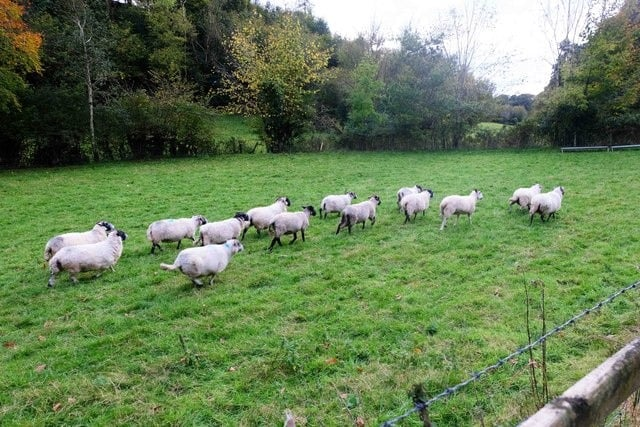
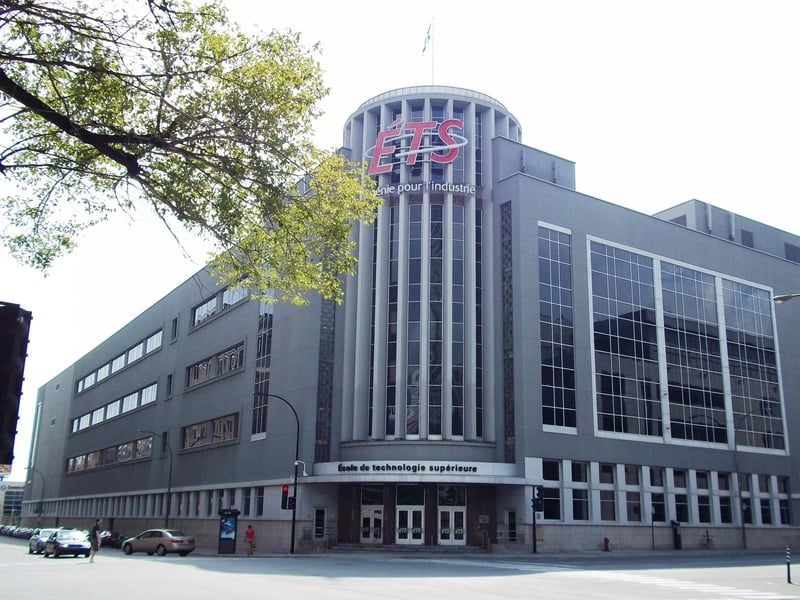

Gap Year · Ireland
WWOOF in Ireland
After my first year at N7, I will be able to take a gap year to work on an Irish farm, initially to improve my English, but also to discover Irish culture and farm life.
Projects and academic exchange opportunities under consideration.

After my first year at N7, I will be able to take a gap year to work on an Irish farm, initially to improve my English, but also to discover Irish culture and farm life.
I could also go to ULB in Belgium for my seventh semester, taking the following courses: Advanced Electronics, Automation and Control, Electrical Machines, and Electrical Energy and Conversion.


My seventh semester could also take place at ETS in Montreal, and thanks to a wide range of courses, I could study: Electronic Circuits, Electromagnetism, Digital Systems Design, and Processor Architecture, in order to strengthen my skills in embedded systems.